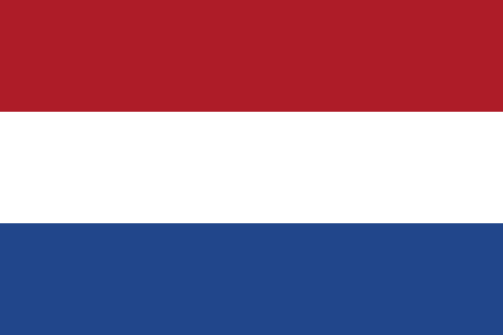
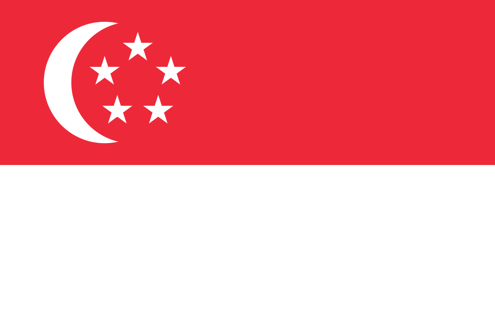
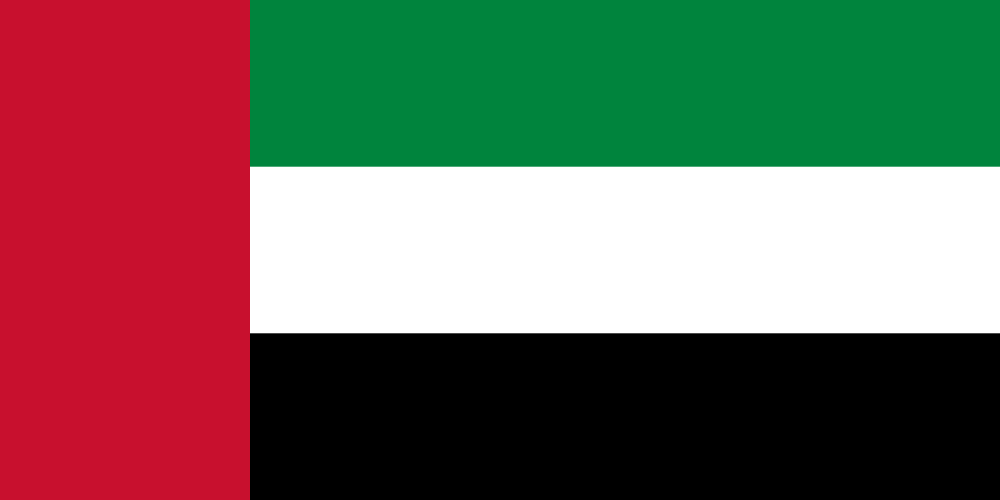
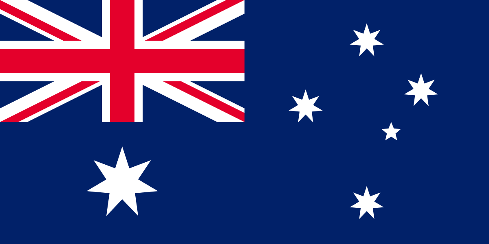
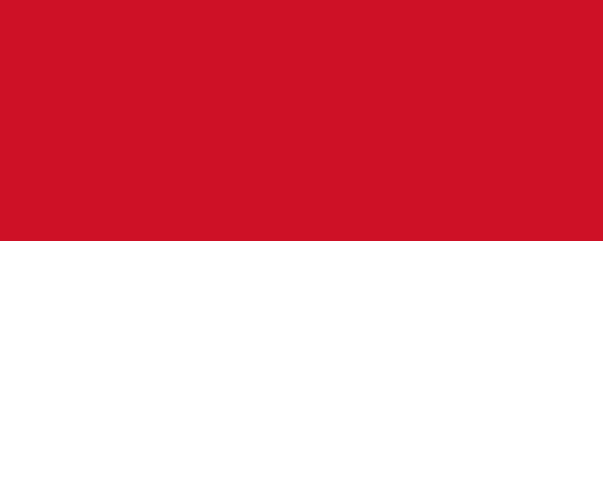
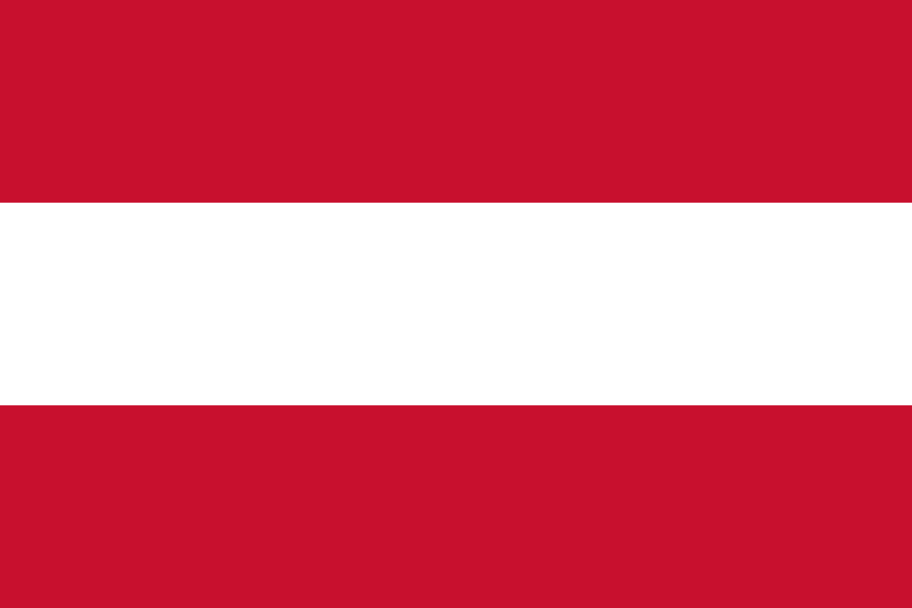

Lando Norris (Bristol, Reino Unido; 13 de noviembre de 1999) es un piloto de automovilismo británico que también posee la nacionalidad belga.
Ha sido campeón del Campeonato Mundial de Karting en 2014, de los campeonatos de Eurocopa Fórmula Renault, Fórmula Renault NEC y Toyota Racing Series en 2016, del Campeonato Europeo de Fórmula 3 de la FIA en 2017, y subcampeón del Campeonato de Fórmula 2 de la FIA en 2018, este último como miembro del Programa de Jóvenes Pilotos de McLaren. Desde 2019 es piloto de la escudería McLaren de Fórmula 1, resultando subcampeón en 2024.
| N.º | Año | Gran Premio | Equipo/Motor | Circuito | Total |
|---|---|---|---|---|---|
| 1 | 2024 |  Gran Premio de Miami Gran Premio de Miami |
McLaren-Mercedes | Autódromo Internacional de Miami | 9 |
| 2 | 2024 | Gran Premio de los Países Bajos | Circuito de Zandvoort | ||
| 3 | 2024 | Gran Premio de Singapur | Circuito callejero de Marina Bay | ||
| 4 | 2024 | Gran Premio de Abu Dabi | Circuito de Yas Marina | ||
| 5 | 2024 | Gran Premio de Australia | Circuito de Albert Park | ||
| 6 | 2024 | Gran Premio de Mónaco | Circuito de Mónaco | ||
| 7 | 2025 | Gran Premio de Austria | Red Bull Ring | ||
| 8 | 2025 |  Gran Premio de Gran Bretaña Gran Premio de Gran Bretaña |
Circuito de Silverstone | ||
| 9 | 2025 | Gran Premio de Hungría | Hungaroring |